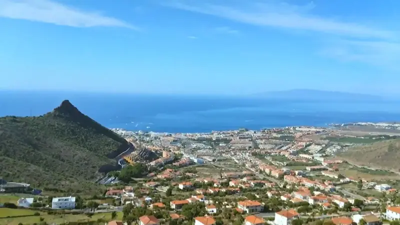
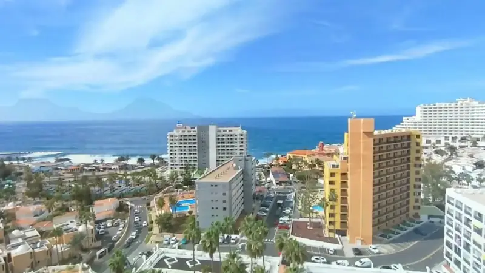
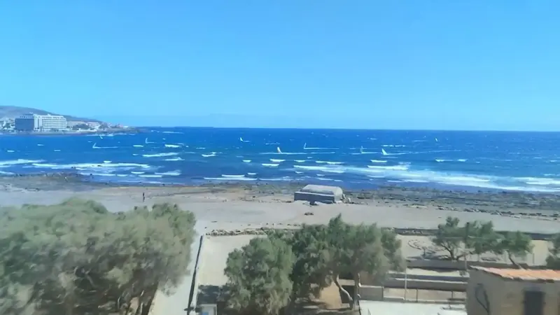
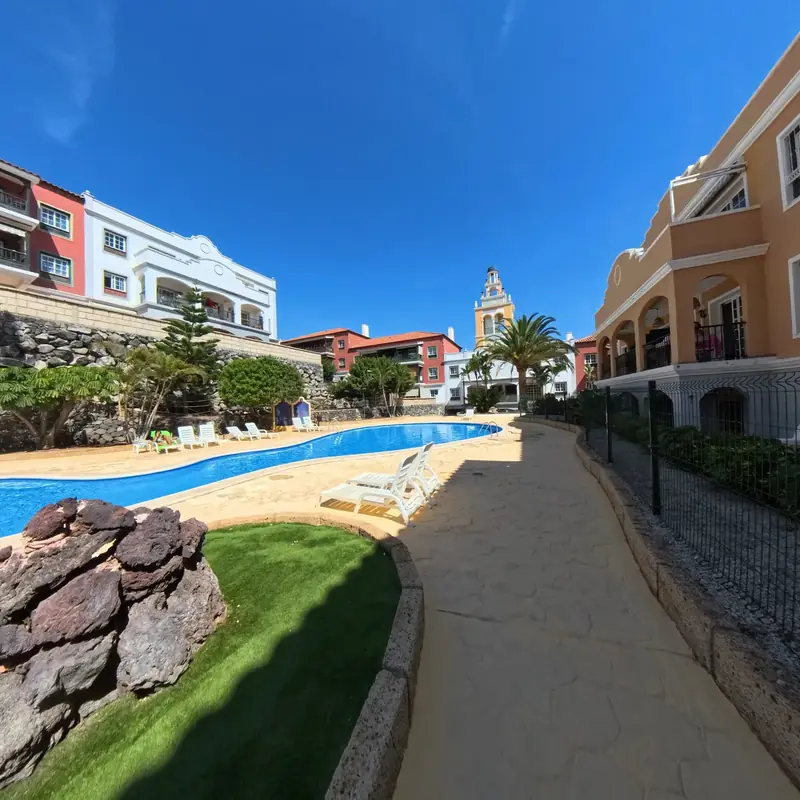
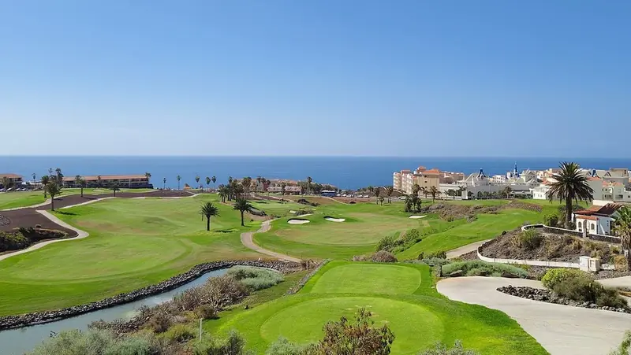
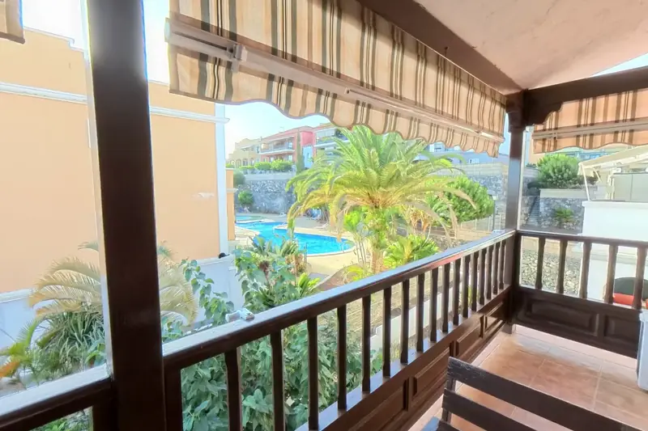

Carta de la asesora
Lo que dicen los datos del sur esta quincena
Los precios de septiembre de idealista dibujan un sur con recorrido: Adeje se sitúa en 4.763 €/m² y Arona en 4.071 €/m², con un +2 % y un +2,4 % interanual. Además, el INE recoge que las compraventas y la firma de hipotecas suben en agosto. Es una quincena con señales de actividad.
Si estás pensando en vender, vemos un comprador activo y una oferta en venta que, según idealista, se reduce un 9 % en el tercer trimestre. Con menos competencia, una vivienda bien presentada y con precio de salida ajustado a su zona destaca más. Te recomendamos pedir una valoración antes de decidir fecha y precio.
Si compras o inviertes, la clave es elegir zona con criterio. Las Rosas (+16,6 % anual) y San Isidro (+11,4 %) muestran dónde hay interés, con precios de entrada de 2.974 y 2.489 €/m². Y con el Euríbor en los titulares, conviene tener la financiación encaminada antes de empezar a visitar.
En Villa's Properties te acompañamos en los dos lados: valoración gratuita y estrategia de venta para propietarios; selección de viviendas y asesoramiento de inversión para compradores. Hablamos con datos de zona, no con intuiciones, y te decimos con claridad qué hacer y en qué orden.
«Con la oferta en venta reducida, un precio de salida bien fijado marca la diferencia.»
Carta y recomendaciones de nuestra asesora, municipio a municipio con mapas y gráficos, mapa de oportunidades para el inversor y conclusiones.
La quincena en tres cifras
Fuente: idealista, septiembre 2026.
El dato de la quincena
Variación anual del precio en Las Rosas (Arona), septiembre 2026
Si vendes
Si tu vivienda está en una zona con avance anual claro, ese dato reciente respalda tu precio de salida. Pídenos una valoración con comparables.
Si compras o inviertes
Las Rosas entra a 2.974 €/m², por debajo de la media de Arona (4.071). Compara siempre con vivienda similar de la misma zona.
Un sur de perfiles muy distintos
En septiembre, idealista sitúa a Adeje en 4.763 €/m², Guía de Isora en 4.496, Arona en 4.071, Santiago del Teide en 3.720, San Miguel de Abona en 3.191 y Granadilla de Abona en 3.018. Adeje, Arona, Granadilla y Guía de Isora avanzan entre un 0,9 % y un 2,4 % en el año. Esa amplitud de precios ofrece una opción a cada perfil de comprador.
| Municipio | Precio medio | Subida anual |
|---|---|---|
| Adeje | 4.763 €/m² | +2 % |
| Guía de Isora | 4.496 €/m² | +0,9 % |
| Arona | 4.071 €/m² | +2,4 % |
| Santiago del Teide | 3.720 €/m² | — |
| San Miguel de Abona | 3.191 €/m² | — |
| Granadilla de Abona | 3.018 €/m² | +2 % |
Precio medio de oferta por m², idealista, septiembre 2026. «—»: sin subida que destacar este mes.
Municipio a municipio
Adeje: la referencia de precio del sur

Municipio de mayor precio medio del sur (4.763 €/m², +2 % anual). Combina Costa Adeje (5.263 €/m²), un producto consolidado, con zonas de entrada como Casco Urbano (3.529) y Tijoco (2.872).
Si vendes: Casco Urbano avanza un +9,6 % anual y Playa Paraíso un +7,2 %. Si tu vivienda está en una de ellas, esa referencia reciente sirve para fundamentar el precio de salida.
Si compras o inviertes: Casco Urbano (3.529 €/m²) y Callao Salvaje (4.228 €/m², +4,2 % en el mes) ofrecen una entrada por debajo de Costa Adeje. Compara con vivienda similar en la misma zona.
Si vendes en Casco Urbano o Playa Paraíso, pide valoración este mes y prepara la documentación. Si compras, visita al menos tres viviendas de la misma zona antes de ofertar.
Cuánto vale una vivienda en Adeje · Comprar casa en Adeje
Arona: amplitud de zonas y buen avance

Municipio de 4.071 €/m² (+2,4 % anual) con gran amplitud: de Playa de las Américas (5.905 €/m²) y Los Cristianos (4.793) a zonas residenciales como Cho-Guaza (2.854) o El Fraile (2.556).
Si vendes: Las Rosas (+16,6 % anual) y Cabo Blanco (+13,9 %) muestran el mayor avance del año. Si tu vivienda está allí, es buen momento para conocer su valor real de mercado.
Si compras o inviertes: Valle San Lorenzo (2.552 €/m², +6,4 % en el mes) y El Fraile (2.556) combinan precio de entrada bajo y avance. Palm Mar (+6,2 % anual) es una opción más consolidada.
Si vendes en Las Rosas o Cabo Blanco, solicita valoración antes de que acabe el año. Si inviertes, visita Valle San Lorenzo y El Fraile el mismo día para comparar.
Cuánto vale una vivienda en Arona · Comprar casa en Arona
Granadilla: entrada asequible y costa con carácter

Municipio de 3.018 €/m² (+2 % anual) con dos caras: interior asequible (Granadilla, 2.152 €/m²; San Isidro, 2.489) y costa con personalidad propia (El Médano, 4.000 €/m²).
Si vendes: San Isidro (+11,4 % anual) y Granadilla (+11,2 %) acumulan los mayores avances del municipio. Es un argumento sólido para defender tu precio ante los compradores.
Si compras o inviertes: Granadilla (2.152 €/m²) y San Isidro (2.489 €/m²) están entre los precios de entrada más bajos del sur, con avance anual cercano al 11 %. Revisa estado y accesos de cada vivienda.
Si buscas entrada asequible, prioriza San Isidro y Granadilla y visita ambas zonas en una mañana. Si vendes en El Médano (4.000 €/m²), cuida fotos y presentación.
Cuánto vale una vivienda en Granadilla de Abona · Comprar casa en Granadilla de Abona
San Miguel de Abona: estabilidad y golf

Mercado estable (3.191 €/m², 0 % anual) con Golf del Sur-Amarilla Golf (3.681 €/m²) como zona de mayor valor y un casco urbano de entrada muy accesible (2.154 €/m²).
Si vendes: Golf del Sur (+7,3 % anual) y el casco de San Miguel (+7,8 %) avanzan en el año. Con comparables sólidos de tu zona, el precio de salida se apoya en datos recientes.
Si compras o inviertes: El casco de San Miguel (2.154 €/m²) y Guargacho (2.494 €/m²) tienen de los precios de entrada más bajos del sur. Golf del Sur ofrece un perfil más residencial.
Si vendes, aporta comparables de tu misma zona al fijar precio. Si compras, visita Guargacho y el casco el mismo día para comparar entorno y precio por metro.
Cuánto vale una vivienda en San Miguel de Abona · Comprar casa en San Miguel de Abona
Guía de Isora: del casco a Abama
Municipio de 4.496 €/m² (+0,9 % anual) con un extremo premium, Abama (7.106 €/m²), y zonas más accesibles como Guía de Isora (3.045) y Playa San Juan (4.059).
Si vendes: Playa San Juan avanza un +5,9 % en el trimestre y un +6,8 % en el año; el casco de Guía de Isora, un +8,1 % anual. Son referencias útiles si vendes en esas zonas.
Si compras o inviertes: El casco de Guía de Isora (3.045 €/m²) ofrece entrada accesible y un +8,1 % anual. Playa San Juan, con más tirón de costa, exige comparar bien el precio por metro.
Si vendes en Playa San Juan, pide valoración mientras el trimestre acompaña. Si inviertes, compara casco y costa con viviendas de condiciones equivalentes.
Cuánto vale una vivienda en Guía de Isora · Comprar casa en Guía de Isora
Santiago del Teide: vistas y perfil residencial
Municipio de 3.720 €/m² con dos zonas claras: Acantilados de Los Gigantes (4.578 €/m²) y Puerto de Santiago (3.667 €/m²), de perfil residencial y entorno singular.
Si vendes: Acantilados de Los Gigantes sube un +2,1 % en el mes y se sitúa en 4.578 €/m². Vistas, orientación y estado de conservación son los argumentos que debes poner en primer plano.
Si compras o inviertes: Puerto de Santiago (3.667 €/m²) ofrece una entrada más ajustada que Los Gigantes, con precio estable en el año (+0,4 %). Valora accesos y servicios del entorno.
Si vendes, apóyate en vistas y estado con buena documentación gráfica. Si compras, visita Puerto de Santiago y Los Gigantes el mismo día.
Cuánto vale una vivienda en Santiago del Teide · Comprar casa en Santiago del Teide
Precios de entrada con recorrido

Para quien invierte, las zonas con entrada accesible y avance anual destacado son Las Rosas (2.974 €/m², +16,6 %), Cabo Blanco (2.692, +13,9 %), San Isidro (2.489, +11,4 %) y Granadilla (2.152, +11,2 %). Son datos de idealista de septiembre de 2026: sirven para decidir dónde mirar, no para prever precios. Contrasta siempre cada vivienda con comparables.
- Granadilla (Granadilla de Abona): 2.152 €/m², +11,2 % en un año
- San Miguel de Abona (San Miguel de Abona): 2.154 €/m², +7,8 % en un año
- San Isidro (Granadilla de Abona): 2.489 €/m², +11,4 % en un año
- Valle San Lorenzo (Arona): 2.552 €/m², +6,6 % en un año
- El Fraile (Arona): 2.556 €/m², +5 % en un año
- Cabo Blanco (Arona): 2.692 €/m², +13,9 % en un año
Zonas por debajo de 2.700 €/m² con subida anual. Fuente: idealista, septiembre 2026.
Lo que se mueve
Compraventas e hipotecas suben en agosto, según el INE
Hay actividad de compra y financiación. Para quien vende, indica demanda real; para quien compra, conviene llegar con la financiación preparada y decidir con agilidad cuando aparezca la vivienda adecuada.
La oferta en venta se reduce un 9 % en el trimestre
Con menos viviendas a la venta, la tuya compite con menos alternativas si está bien presentada y bien posicionada. Si compras, conviene definir criterios con antelación y no dejar escapar lo que encaja.
Canarias plantea 10 años de residencia para comprar
Es una propuesta al Gobierno, no una norma vigente. Conviene seguirla de cerca tanto si vendes como si compras. Si tienes dudas sobre cómo podría afectarte, consúltalo con nosotros o con tu asesor.
Tasaciones hipotecarias: nuevo récord pese a moderarse
Las tasaciones son la referencia que usa el banco al financiar. Vender con un precio coherente con la tasación facilita que el comprador consiga hipoteca; comprar con tasación previa evita sorpresas.
El Euríbor diario repunta de nuevo
Para quien compra con hipoteca variable, conviene simular la cuota con distintos escenarios y valorar condiciones fijas o mixtas. Para quien vende, ayuda a entender el presupuesto real del comprador.
Compradores extranjeros: menos operaciones en España
Una estrategia de venta sólida no depende de un único perfil de comprador: el residente también cuenta. Si compras, pregúntanos por el perfil de interesados que está moviendo cada vivienda.
Recomendaciones de la asesora
Nuestras recomendaciones para esta quincena
Estas ocho recomendaciones salen de los precios de septiembre y de las noticias de la quincena. Son pasos concretos para ordenar tu decisión, tanto si vendes como si compras o inviertes.
Si vendes
Con la oferta reducida un 9 % en el tercer trimestre, según idealista, un precio basado en ventas reales de tu zona es tu mejor baza. Solicítanos la valoración gratuita esta quincena.
Nota simple, certificado energético y recibos al día: tenerlos listos antes de publicar acorta plazos y da confianza al comprador. Para cualquier cuestión fiscal, consulta con tu asesor fiscal o con nosotros.
Con menos competencia, destacar cuenta. Fotografía profesional, vivienda ordenada y pequeñas reparaciones hechas antes de las primeras visitas ayudan a que el comprador se imagine viviendo allí.
Compara tu precio por metro con la referencia de tu zona (por ejemplo, Casco Urbano en Adeje, 3.529 €/m²). Un precio de salida coherente desde el primer día atrae visitas cualificadas.
Si compras o inviertes
Define presupuesto y perfil de zona con datos: Las Rosas (2.974 €/m²) y San Isidro (2.489 €/m²) combinan entrada accesible y avance anual. Después busca la vivienda concreta dentro de esa zona.
Con el Euríbor diario repuntando, simula la cuota en varios escenarios y pide una aprobación previa. Así sabes tu presupuesto real y puedes ofertar con rapidez cuando aparezca la vivienda adecuada.
Visita varias viviendas de la misma zona y compara estado, orientación y precio por metro. Te acompañamos en las visitas y te damos una opinión clara sobre cada opción.
Antes de ofertar, revisa nota simple, cargas, estado de la comunidad y licencias. Para impuestos y gastos de la compra, consulta con tu asesor fiscal o con nosotros: no decidas con cifras de oídas.

Conclusiones
Cinco conclusiones para decidir con criterio
- El sur ofrece precios para cada perfilDe los 3.018 €/m² de Granadilla de Abona a los 4.763 €/m² de Adeje, según idealista (septiembre 2026), hay municipio para cada presupuesto y objetivo.
- Hay zonas con avance anual destacadoLas Rosas (+16,6 %), Cabo Blanco (+13,9 %), San Isidro (+11,4 %) y Granadilla (+11,2 %) lideran los avances anuales entre las zonas analizadas.
- La oferta en venta es más reducidaSegún idealista, baja un 9 % en el tercer trimestre. Para el vendedor, es un entorno con menos competencia; para el comprador, pide decisión y preparación.
- La actividad de compraventa acompañaEl INE recoge que las compraventas y la firma de hipotecas suben en agosto: hay demanda y financiación en movimiento.
- El precio por zona manda, no el municipioDentro de un mismo municipio hay diferencias grandes: Arona va de 2.556 €/m² en El Fraile a 5.905 €/m² en Playa de las Américas.
- Los precios de octubre de idealista en Adeje y Arona, y su evolución en las zonas de entrada.
- La evolución de la oferta en venta y las compraventas en las próximas publicaciones del INE.
- El seguimiento de la propuesta de residencia para comprar en Canarias y cualquier avance oficial.
Gracias por leernos. Si tienes una vivienda en el sur, te preparamos una valoración gratuita con comparables de tu zona. Si buscas comprar o invertir, cuéntanos tu presupuesto y objetivo y te proponemos un plan claro. Estamos a tu disposición para lo que necesites.
Déjanos tu email o tu WhatsApp al descargar el PDF y te llegará el siguiente, con los datos nuevos de tu zona.
Fuentes: idealista (septiembre 2026, precios por municipio y zona; y las noticias citadas), INE, Portal Estadístico del Notariado, El Mundo y Expansión. Las noticias están resumidas por Villa’s Properties y enlazan al original. Este análisis es orientativo y no sustituye una valoración profesional de cada vivienda.